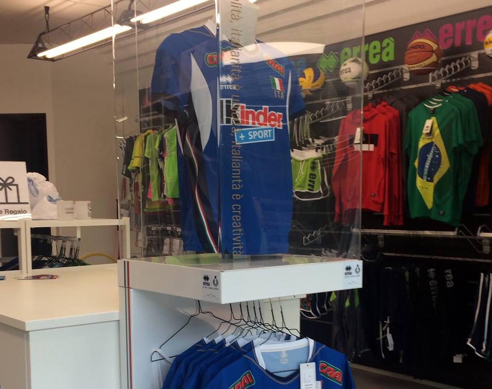
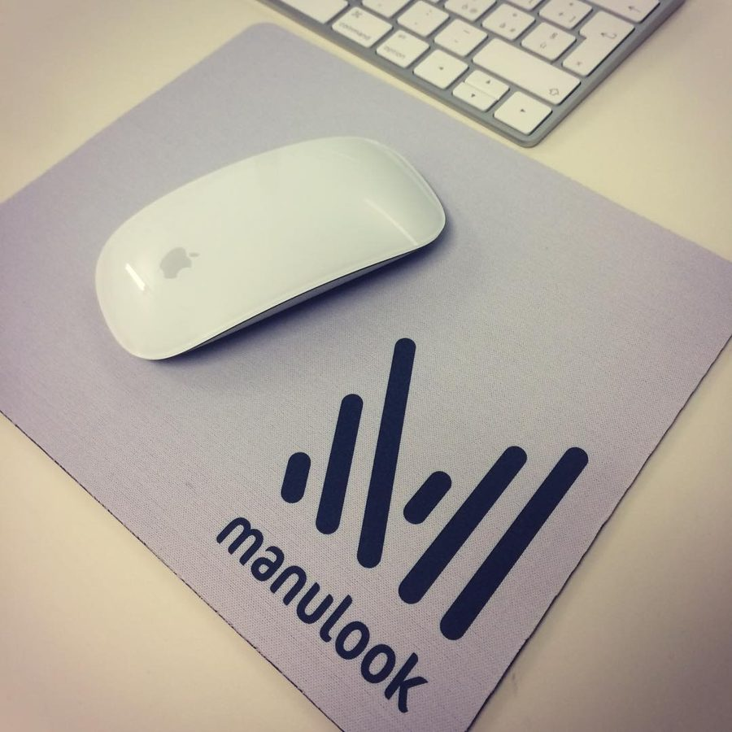
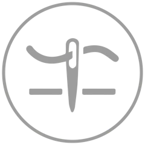
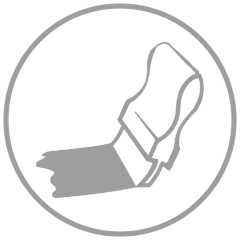
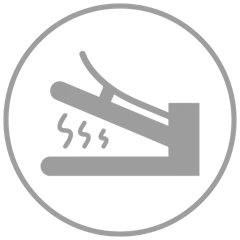
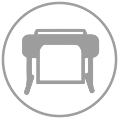
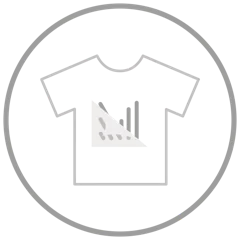
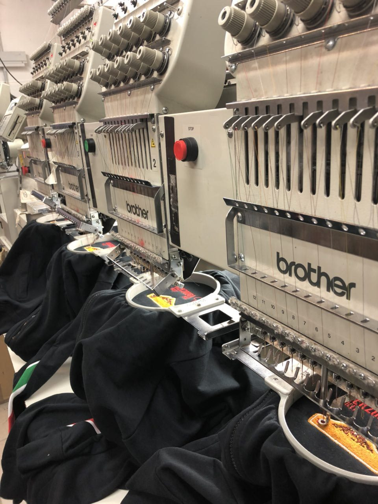

L'azienda
Forniamo abbigliamento sportivo, casual, professionale e accessori, personalizzati con ricamo o stampa. Il nostro punto di forza è il riassortimento veloce, senza quantità minime.
Vi consigliamo sempre la soluzione più adatta a quello che vi serve. Diamo peso alla fiducia e al rapporto personale: insieme si costruisce molto.
I capi li scegliamo con cura, da marchi italiani e internazionali con esperienza nei loro settori. Voi scegliete il prodotto, noi lo personalizziamo.

Le tecniche di personalizzazione
Ogni capo e ogni logo ha la sua tecnica giusta: ve la consigliamo noi.

Ricamo
La tecnica più pregiata, usata in tutti i settori. Con le nostre macchine facciamo fino a 4 ricami insieme, con un massimo di 12 colori.

Serigrafia
La personalizzazione più diffusa, e la più conveniente per le grandi tirature. Il logo si incide su un telaio e il colore, a base d'acqua, passa sul capo.

Termotrasferibile
Il disegno si ritaglia da pellicole colorate e si salda a caldo sul capo. Sovrapponendo più pellicole si ottiene una stampa a più colori.

Stampa e taglio
Il logo si stampa in alta definizione su un supporto termotrasferibile, si ritaglia e si applica a caldo. Ideale per loghi ricchi di dettagli, colori e sfumature.

Sublimazione
Per stampare tessuti e oggetti. Funziona sui tessuti con almeno il 40% di poliestere.

I marchi che trattiamo
Partner scelti per la qualità dei prodotti, l'esperienza nel loro settore e la rapidità delle consegne.
- Action Wear
- Atlantis
- Barret
- Cama
- Clique
- Colombo Mario
- Erreà
- General Marketing
- Givova
- GP Italia
- Innova
- Isacco
- James & Nicholson
- JHK
- James Ross Collection
- Legea
- Mikasa
- Payper
- Phyto Performance
- PP Workwear
- Projob
- Promobusiness
- Roly
- Sipec
- Socim
- Stedman
- Textile Europe
- Valento
Chiedeteci un preventivo
Diteci che capi vi servono, quanti, e mandateci il logo: vi diciamo la tecnica migliore e i tempi.